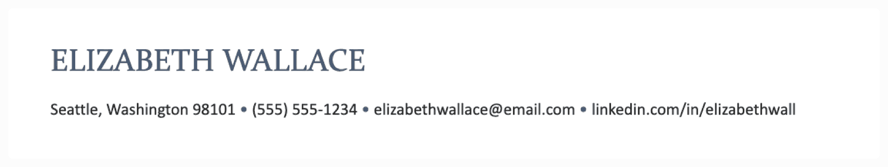

Adding Your name and contact information
It might seem obvious, but job seekers sometimes forget a key piece of contact information in this section. Double check and make it as easy as possible for recruiters to contact you for a job interview.
The top of your resume should include:
- Name
- Phone number
- Location
- Email Address
- LinkedIn profile URL